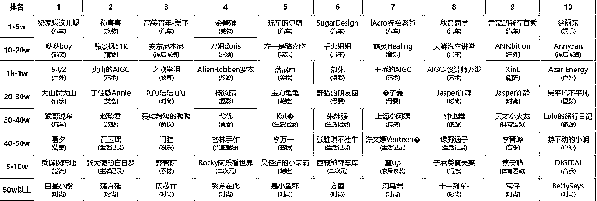
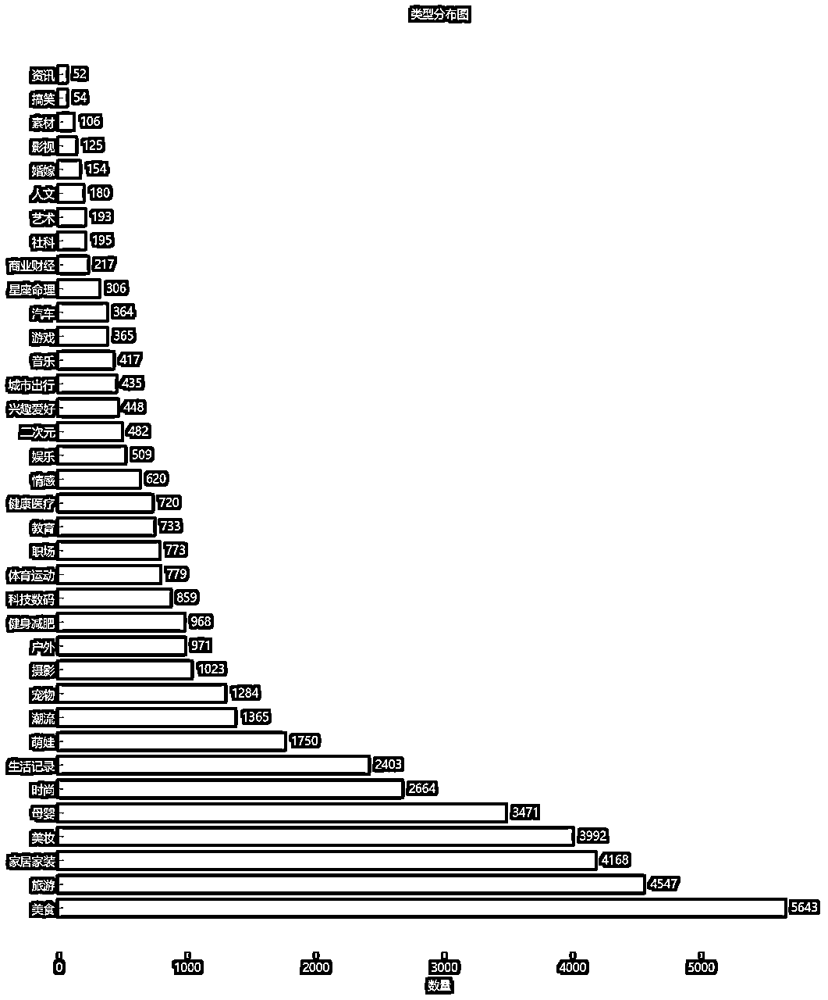

小红书商单接广赛道初级调研-保姆级教程
来源：https://pcndievlt02e.feishu.cn/docx/Cs1Ud22sDopPz1xS1stcx5jgnEc
摘要
专为准备入行小红书商单接广新手小白准备，通过基础的数据调研与实践经验总结，助你快速掌握小红书商单调研策略。
一、选择小红书商单赛道的理由
- 用户群体年轻，集中在一二线城市，消费意愿强、有潜力。
- 宏观上：月活跃用户突破3.39亿，较2024年增长约6%，广告收入同比增长48%，支付能力领先同类内容社区。
微观上：生财有术小红书相关多艘船持续航行，细分虚拟产品，蓝海实拍，商单接广，变现多样化。
- 流量机制友好，图文+短视频并行，算法对新号冷启动容忍度高，1000 粉即可开蒲公英接单，首单转化门槛低。
- 对个体创作者，它是“轻资产、快回报”的副业选择；对品牌方，是高效触达精准消费群体的战略渠道；对消费者，则是通过真实用户分享降低决策成本，同时提供便捷的购物体验。
- 从入门门槛来看，商单的门槛相对较低，即使是低粉账号也能接到商单。从2021年到2025年精华帖，商单接广依然有很多人拿到结果，而且随着持续深耕，粉丝增长，溢价能力增强，广告收益不断上涨，复利空间大。
二、数据调研
教员说过：调查就像十月怀胎，解决问题就像一朝分晚。
亦仁说过：一定要养成开干之前先调研的习惯，这是赚钱的最基础能力。
所以，本着没调研就没有发言权的原则，我把小红书所有商单博主的数据进行清洗-汇总-分析，以求能找到一些可像素级模仿的异常值，再进行升级和迁移。
- 工具推荐：「灰豚数据」，个人版提供 15 天免费使用。
- 采样窗口：2025 年 5–6 月有更新，商业笔记大于0博主
- 粉丝数 ≥1000（能接蒲公英商单）；
- 图文或视频报价 ≥1000 元；
- 图文cpe和视频cpe大于0以及无认证信息的博主
- 指标计算：CPE＝视频笔记报价/视频笔记平均互动量
- 1000粉才能开通开通蒲公英接商单
- 不考虑高频接单的低商单，广告直发废号严重
- 调研的是赛道天花板，尽量得到的是高净值博主数据
三、大盘数据分析
以下图表均由chat-GPT独家提供，因数据量太大，genimi，deepseek，元宝，豆包无法全部读取
粉丝数分布图
各个类型博主的数量
视频和图文商单广告报价

各类型博主平均商单报价及中位数报价
新手小白建议
新手小白自媒体10条建议：
- 第一阶段粉丝目标锁定3-5万区间： 该档位账号仅占市场六分之一，但单条报价可达1-3万粉账号的2倍左右。建议先突破3万粉再冲刺10万粉，比在1-3万粉红海内卷更高效。
- 10万粉是商业化关键分水岭： 报价曲线在10万粉前增长平缓，过线后单价显著跳涨。10万粉前侧重内容密度与互动率；接近10万粉时同步提升制作质量，为后续提价铺路。
- 前期主攻短视频，后期补充图文： <1万粉阶段，短视频平均单价约为同档图文的2-3倍，且更易获算法推荐。用短视频冲流量，粉丝稳定后可用图文测评、清单等低成本形式填充发布频率。
- 优先评估切入稀缺高价赛道： 汽车、财经、艺术、二次元、社科等垂类账号占比不足5%，但平均报价领先。若具备专业背景或独特资源，可在低竞争环境下快速提升客单价。
- 选择红海领域务必极致垂直： 美食、旅行、美妆等七大类生活账号占比近六成，但单价偏低。需通过场景（如“独居改造”）或人群（如“宝妈职场回归”）精准切分，打造差异化人设避免同质化。
- 以“中位价”为合理定价锚点： 多数类别中位价集中在3-5k区间。将其视为起步价，再依据选题深度、粉丝互动和版权范围上浮15-25%，更容易被品牌方接受。
- 3-10万粉阶段保持高频适中价： 此区间广告主对更新频次要求最高，且单价尚未进入快速上涨期。建议周更4-5条内容，报价控制在同类中位价附近，既能保障现金流又能持续扩大曝光。
- 打包售卖提升单次合作收益： 品牌方倾向一次采购多条内容。可将1条短视频搭配1-3条图文或故事合集组成固定套餐，单价允许小幅优惠，此举能提高总收入和复购概率。
- 粉丝跃档时同步更新价目表： 图文单价每跨越一个5万粉区间（如从<5万到5-10万），通常上涨约2k。在粉丝数逼近上档线（如2.9万或7.9万）时，提前公布新价，利用涨价预期促成合作。
- 数据驱动选题持续迭代： 每发布约30条内容后，复盘完播率、转发率及评论关键词。将高表现选题系列化，果断淘汰低表现选题，确保内容效率与商业价值同步提升，匹配粉丝增长与单价上涨。
商单报价前10优秀博主
同时，我也整理出了不同粉丝区间商单报价前10的部分优秀博主（仅供参考）。

四、低粉数据再分析（3万以下）
完成了第一步大盘数据调研之后，但作为新手小白，这个数据对我依然没有参考性，我的能力只能达到3万粉，所以接下来我要继续拆解3W粉有没有不一样的地方
粉丝数分布图
各个类型博主的数量

各类型博主平均商单报价及中位数报价
新手小白建议
结合博主数据，聚焦分析3万粉丝以下（小号）博主群体，并与整体大盘进行对比，为新手提供可借鉴的差异点与建议：
- 报价显著下探至“2000元档”：小号池中，多数类型平均报价集中在1800-3000元区间，而全量数据中同类均价通常在4000-8000元。这表明：品牌对小号存在明显的“2000元心理天花板”，突破溢价需依赖稀缺内容或打包服务（如多篇笔记/系列合作）。
- 类型间价差大幅收窄：汽车、艺术、二次元虽仍为报价最高类别，但其对小号溢价仅比“大众类”（如生活、美食）高出约600-1000元；而在大盘中，此差距可达数千甚至上万元。小号阶段选择稀缺赛道，优势更多体现在未来的涨价潜力，而非即时高收益。
- 生活方式类占比持续扩大：美食、旅行、家居、美妆、母婴、时尚、生活记录等7类在小号中占比近60%，较全量数据再增约2个百分点。这印证了“吃穿住行”类内容仍是新人最易入门的领域，但也意味着该赛道竞争最为激烈。
- 小众领域在小号池“相对放大”：二次元与户外类尤为明显。全量数据中二次元账号占比仅约0.5%，但在3万粉以下小号中提升至1%+，且报价跻身前三。这提示新人可关注此类“青黄不接”的细分市场：体量不大、报价相对较高、缺乏成熟头部。
- 粉丝分布呈“1-1.5万”高峰区：1-1.5万粉档位账号数超1.4万，占小号总量三分之一，形成首个显著拥堵区；3万粉以上人数锐减。因此，突破1.5万粉后稳步迈向3万粉，是快速脱离最密集竞争带的关键。
- 粉丝量与报价关联性“钝化”：大盘中，粉丝量每跨越一个5万档位（如5万到10万），图文报价通常可增加约2000元；小号阶段同档位跃升带来的溢价仅几百元。这意味着涨粉的直接变现效率较低，提升内容质量与品牌契合度更为重要。
- 专业/功能型类别价值被低估：健康医疗、科技数码、财经资讯类小号均价仅2000-2500元，与美食、宠物类几乎持平，但账号数量依然稀缺（普遍不足百个）。若能持续产出高质量干货内容，未来具备更大的涨价空间。
- 谈判焦点转向“内容形式”：品牌对小号的预算分配差异，主要不看粉丝量级，而看内容打包方案：视频+图文组合、系列笔记、主题合集等形式能显著拉高单次合作金额。仅报单条内容价格，较难突破2000元关口。
- 短视频仍是冷启动优选：尽管整体小号报价被压低，但在1万粉以下阶段，视频平均报价仍比图文高出30-40%。若资源有限，建议优先用短视频吸引流量，再用图文维持稳定更新节奏，形成更实用的组合策略。
- 更新节奏比单条爆款更重要：数据显示1-2.5万粉段账号数量最多，表明平台推荐机制已将“更新频率”作为小号曝光的关键指标。保持至少“日更视频或双日更图文”的节奏，有助于率先跨越最拥挤的粉丝区间，后续再以内容深度争取更高报价。
商单报价前10优秀博主
同时，我也整理出了不同粉丝区间商单报价前10的部分优秀博主（仅供参考）。
五、进一步思考
以上的数据只能简单看出一些大方向的框架，还是无法判断到底什么样的号我能抄，什么样的号我不能抄，所以我又做了一个动作，把所有1万以下符合要求的博主都看了一遍，一个一个的看。
工具推荐：批量打开网页：https://www.openurl.cn/
从6358个博主中筛选了可抄的565个博主，并统计出5-6月的商单笔记数量，价格图文报价&视频报价，计算出每个博主的号价值（月收入），得到以下图表：
1.汽车、设计、金融品牌肯砸钱，单条广告常能卖到几千块；家居、美妆同行太多，价格往往只有一两千。
2.同样一条广告，拍成视频通常比写图文贵三成左右。
3.汽车、艺术这类账号，每个粉丝能带来 1–5 元/月，比大众类目高好几倍。
六、结尾
至此，我的赛道调研已结束，用时4天。
接下来，我会根据我选择的赛道进行有针对性的博主调研及笔记分析。当然，这些知识辅助判断，提高我们的成功率和收益的。但想要有收益，关键还是要行动。
本文只是简单的阐述本人调研的一种最简单的方法，不一定适合所有人，仅供参考。
坚持调研、执行、复盘的循环，不断验证策略有效性。
这次就分享到这，祝大家生财有术。
免责声明
本文所涉及的所有数据来源于公开网络信息及第三方数据工具，仅用于个人学习、研究与信息分析，不构成任何商业推广建议或对第三方的诋毁、侵权、骚扰。
本文未对任何博主或账号的个人隐私信息进行采集、泄露、传播，亦未用于任何商业化售卖行为。如涉及版权或权益问题，请联系作者删除或整改。
本文所载内容仅代表作者个人观点与调研方法论，与小红书官方平台及相关博主无关，使用者需自行判断并承担使用风险。